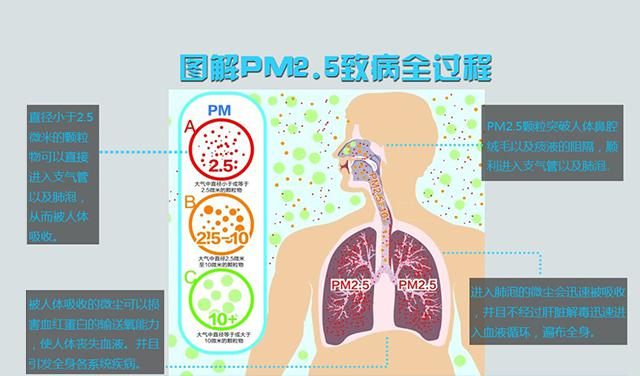

1、颗粒物会对呼吸系统和心血管系统造成伤害，导致哮喘、肺癌、心血管疾病、出生缺陷和过早死亡。 细颗粒物（PM2.5），易吸附有毒害的物质。如重金属（在城市中以重金属元素最为严重，较突出的有Zn、Pb、As、Cd等，而不同地区也有着各自的特点）、有毒微生物等。由于体积更小，PM2.5具有更强的穿透力，可能抵达细支气管壁，并干扰肺内的气体交换。更小的微粒（直径小于等于100纳米）会通过肺部传递影响其他器官。
2、PM2.5会导致动脉斑块沉积，引发血管炎症和动脉粥样硬化，最终导致心脏病或其他心血管问题。
3、PM2.5极易吸附多环芳烃等有机污染物和重金属，使致癌、致畸、致突变的机率明显升高。
详情请戳：http://www.sangebaba.com/

点击二维码关注三个爸爸公众号